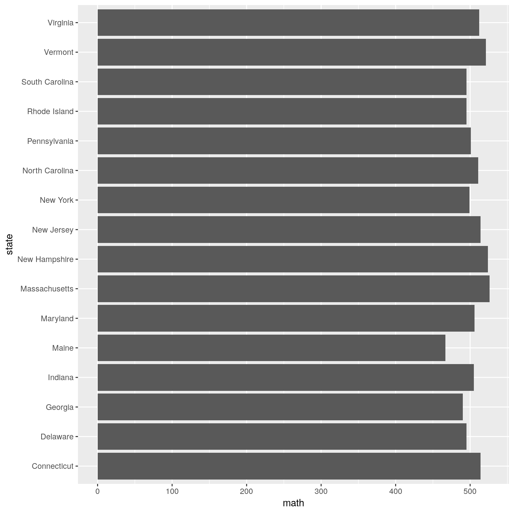

Chapter 10 Data Graphics
Data graphics can be understood in terms of five basic elements (Baumer, Kaplan, and Horton 2017):
- Aesthetics or visual cues
- Coordinate system
- Scales
- Context
- Facets and layers
10.1 Aesthetics or Visual cues
Aesthetics or visual cues are graphical elements that draw the eye to what you want your audience to focus upon. They are the fundamental building blocks of data graphics, and the choice of which visual cues to use to represent which quantities is the central question for the data graphic composer. Nathan Yau identifies nine distinct visual cues, for which we also list whether that cue is used to encode a numerical or categorical quantity:
- Position (numerical): where in relation to other things?
- Length (numerical): how big (in one dimension)?
- Angle (numerical): how wide? parallel to something else?
- Direction (numerical) at what slope? In a time series, going up or down?
- Shape (categorical) belonging to which group?
- Area (numerical) how big (in two dimensions)?
- Volume (numerical) how big (in three dimensions)?
- Shade (either) to what extent? how severely?
- Color (either) to what extent? how severely? Beware of red/green color blindness
knitr::include_graphics(path = "images/cues.jpg")Figure 10.1: Commonly used aesthetics in data visualization: position, shape, size, color, line width, line type. Some of these aesthetics can represent both continuous and discrete data (position, size, line width, color) while others can only represent discrete data (shape, line type).
10.2 Coordinate systems
How are the data points organized? While any number of coordinate systems are possible, three are most common.
10.2.1 Cartesian
This is the familiar (\(x, y\))-rectangular coordinate system with two perpendicular axes.
10.2.2 Polar
The radial analog of the Cartesian system with points identified by their radius \(\rho\) and angle \(\theta\).
10.2.3 Geographic
This is the increasingly important system in which we have locations on the curved surface of the Earth, but we are trying to represent these locations in a flat two-dimensional plane.
10.3 Scale
Scales translate values into visual cues. The choice of scale is often crucial. The central question is how does distance in the data graphic translate into meaningful differences in quantity? Each coordinate axis can have its own scale, for which we have three different choices:
10.3.1 Numeric
A numeric quantity is most commonly set on a linear, logarithmic, or percent- age scale. Note that a logarithmic scale does not have the property that, say, a one-centimeter difference in position corresponds to an equal difference in quantity anywhere on the scale.
10.3.2 Categorical
A categorical variable may have no ordering (e.g., Democrat, Republican, or Independent), or it may be ordinal (e.g., never, former, or current smoker).
10.3.3 Time
Time is a numeric quantity that has some special properties. First, because of the calendar, it can be demarcated by a series of different units (e.g., year, month, day, etc.). Second, it can be considered periodically (or cyclically) as a “wrap-around” scale. Time is also so commonly used and misused that it warrants careful consider- ation.
10.4 Context
The purpose of data graphics is to help the viewer make meaningful comparisons, but a bad data graphic can do just the opposite: It can instead focus the viewer’s attention on meaningless artifacts, or ignore crucial pieces of relevant but external knowledge. Context can be added to data graphics in the form of titles or subtitles that explain what is being shown, axis labels that make it clear how units and scale are depicted, or reference points or lines that contribute relevant external information. While one should avoid cluttering up a data graphic with excessive annotations, it is necessary to provide proper context.
10.5 Facets and layers
One of the fundamental challenges of creating data graphics is condensing multivariate information into a two-dimensional image. While three-dimensional images are occasionally useful, they are often more confusing than anything else. Instead, here are three common ways of incorporating more variables into a two-dimensional data graphic.
10.5.1 Facets
A single data graphic can be composed of several small multiples of the same basic plot, with one (discrete) variable changing in each of the small sub-images.
10.5.2 Layers
It is sometimes appropriate to draw a new layer on top of an existing data graphic. This new layer can provide context or comparison, but there is a limit to how many layers humans can reliably parse.
10.5.3 Animation
If time is the additional variable, then an animation can sometimes effectively convey changes in that variable. Of course, this doesn’t work on the printed page, and makes it impossible for the user to see all the data at once.
10.6 Color
Approximately 8 percent of the population—most of whom are men—have some form of color blindness. Most commonly, this renders them incapable of seeing colors accurately, most notably of distinguishing between red and green. Compounding the problem, many of these people do not know that they are color-blind. Thus, for professional graphics it is worth thinking carefully about which colors to use. The NFL famously failed to account for this in a 2015 game in which the Buffalo Bills wore all-red jerseys and the New York Jets wore all-green, leaving colorblind fans unable to distinguish one team from the other!
Thankfully, we have been freed from the burden of having to create such intelligent palettes by the research of Cynthia Brewer, creator of the ColorBrewer website (and R package). Brewer has created colorblind-safe palettes in a variety of hues for three different types of numeric data in a single variable:
10.6.1 Sequential
The ordering of the data has only one direction. Positive integers are sequential because they can only go up: they can’t go past 0. (Thus, if 0 is encoded as white, then any darker shade of gray indicates a larger number.)
10.6.2 Diverging
The ordering of the data has two directions. In an election forecast, we com- monly see states colored based on how they are expected to vote for the president. Since red is associated with Republicans and blue with Democrats, states that are solidly red or blue are on opposite ends of the scale. But “swing states” that could go either way may appear purple, white, or some other neutral color that is “between” red and blue.
10.6.3 Qualitative
There is no ordering of the data, and we simply need color to differentiate different categories.
pacman::p_load(RColorBrewer)
RColorBrewer::display.brewer.all()
Also see the viridis R package.
10.7 Examples
10.7.1 SAT Scores
The bar graph below displays the average score on the math portion of the 2010 SAT (with possible scores ranging from 200 to 800) among states for whom at least two-thirds of the students took the SAT.
pacman::p_load(mdsr)
pacman::p_load(mosaic)
gf_colh(state ~ math, data = subset(SAT_2010, sat_pct > 66)) 
This plot uses the visual cue of position to represent the math SAT score on the vertical axis with a linear scale. The categorical variable of state is arrayed on the horizontal axis. Although the states are ordered alphabetically, it would not be appropriate to consider the state variable to be ordinal, since the ordering is not meaningful in the context of math SAT scores. The coordinate system is Cartesian, although as noted previously, the horizontal coordinate is meaningless. Context is provided by the axis labels and title.
10.7.2 Swimming records
Next, we consider a time series that shows the progression of the world record times in the 100-meter freestyle swimming event for men and women. The Figure below displays the times as a function of the year in which the new record was set. At some level this is simply a scatterplot that uses position on both the vertical and horizontal axes to indicate swimming time and chronological time, respectively, in a Cartesian plane. The numeric scale on the vertical axis is linear, in units of seconds, while the scale on the horizontal axis is also linear, measured in years. But there is more going on here. Color is being used as a visual cue to distinguish the categorical variable sex. Furthermore, since the points are connected by lines, direction is being used to indicate the progression of the record times. (In this case, the records can only get faster, so the direction is always down.) One might even argue that angle is being used to compare the descent of the world records across time and/or gender. In fact, in this case shape is also being used to distinguish sex.
pacman::p_load(mosaicData)
gf_point(time ~ year , data = SwimRecords, color = ~ sex, shape = ~ sex, size = 3) %>%
gf_line(time ~ year , data = SwimRecords, color = ~ sex)
10.7.3 HELP study
The HELP study was a clinical trial for adult inpatients recruited from a detoxification unit. Patients with no primary care physician were randomized to receive a multidisciplinary assessment and a brief motivational intervention or usual care, with the goal of linking them to primary medical care.
gf_boxplot(avg_drinks ~ racegrp | sex, data = HELPrct)
10.8 Exercises
10.8.1 Exercise 1
For this exercise, refer to the article assigned to your team in the Terms and Concepts exercise.
- Identify the aesthetics and scale(s). If your article did not contain a graphic, pick a Table in your paper and think about what graphic could have been used instead. See Fundamentals of Data Visualization and Top 50 ggplot2 Visualizations for examples of graphics.
- How many variables are depicted in the graphic? Explicitly link each variable to an aesthetic that you listed above.
- Critique this data graphic using the taxonomy described in this chapter.
10.8.2 Exercise 2
Vox published a list of Charts that explain food in America. There are 40 maps, charts, and graphs that show where our food and drink comes from and how we eat it.
Pick your best and least favorite graphic. One representative from each group will present in 1 minute or less their rationale for the groups choices.
B Appendix B
Baumer, Benjamin S., Daniel T. Kaplan, and Nicholas J. Horton. 2017. Modern Data Science with R. Chapman; Hall/CRC Press: Boca Raton. https://www.crcpress.com/Modern-Data-Science-with-R/Baumer-Kaplan-Horton/9781498724487.